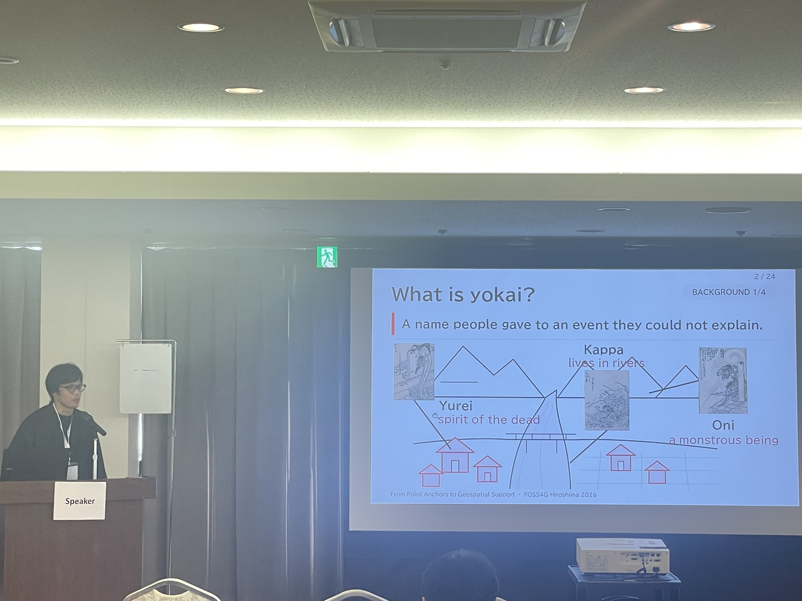
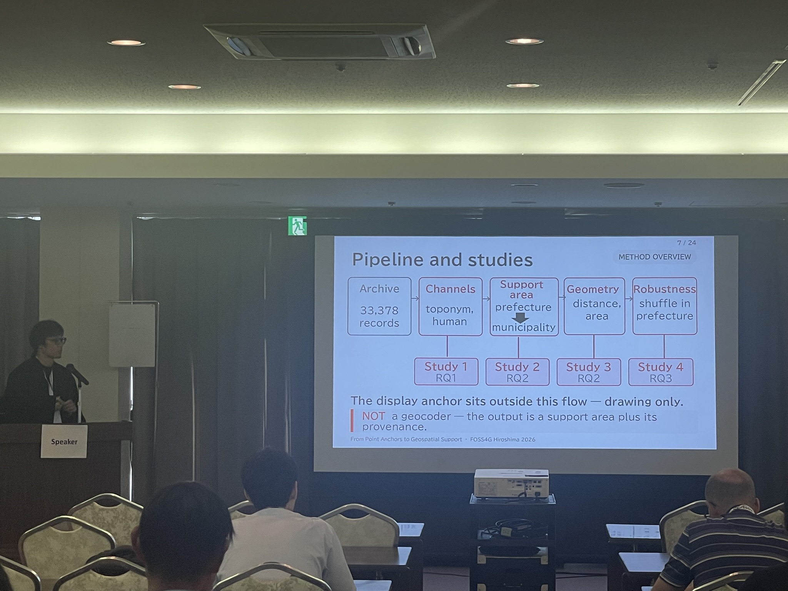

On September 2, 2026, we presented our research at FOSS4G 2026, an international conference on open-source mapping and geospatial technology. We explored how stories connect with places using 33,378 records from the Kaii-Yokai Folklore Database maintained by the International Research Center for Japanese Studies.
Old stories about yōkai, the mysterious beings of Japanese folklore, often mention a riverbank, mountain pass, or village edge. These descriptions offer clues about a setting even without an address. We used software to extract such clues from the stories and compare them with map information about rivers, coastlines, and administrative areas.
Our approach keeps track of how precisely a place is known. A story located only within a prefecture remains associated with that area; one with clearer evidence can be narrowed down to a municipality. The words in the story are preserved alongside this information, so a marker on the map is not mistaken for the exact site of an event.
About 28% of the records contain place names, while about 75% contain words describing places. Kappa stories tend to use water-related language, and ghost stories tend to use words about death and mourning. These findings describe how places appear in the stories.
Keeping these clues and uncertainties visible helps us explore local culture through maps: what stories people told about their surroundings, and how they understood familiar places.
Talk title: Geographic Visualization of the Kaii-Yokai Folklore Database Using Open-Source GIS and NLP
